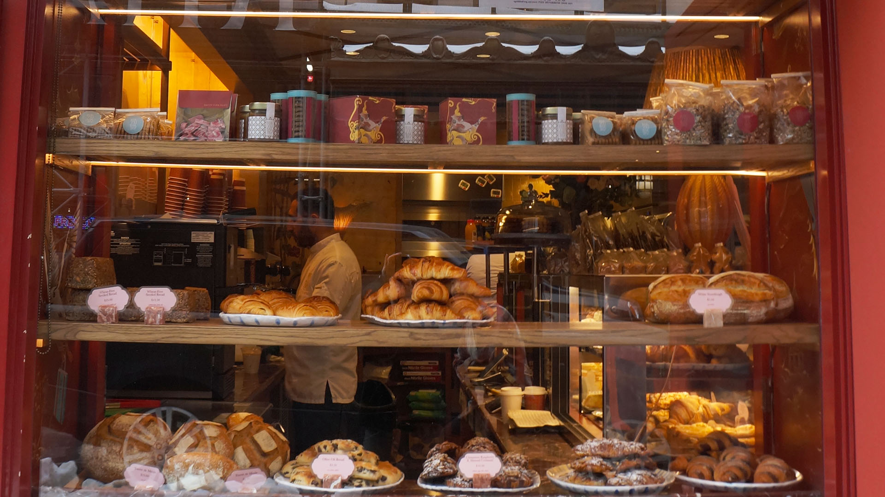

I used a high color vibance to enhance the warm colors in the photo. I also made the depth of field wide so you can not only see the pastries but also the kitchen behind them. The colors make the photo calm, and the depth makes it so you can see the chaos happening behind it.